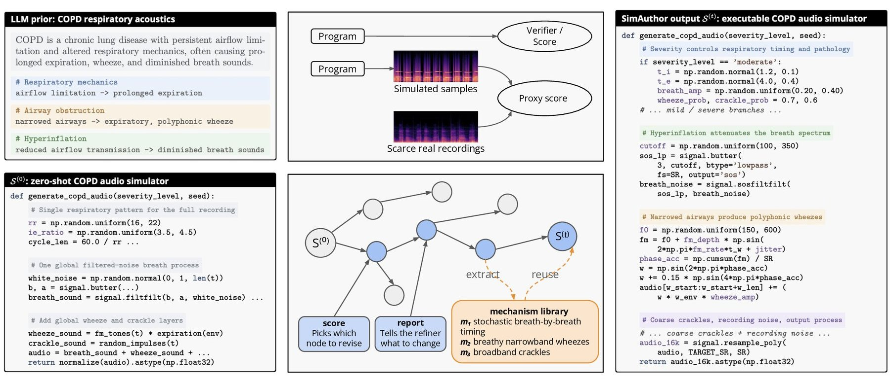
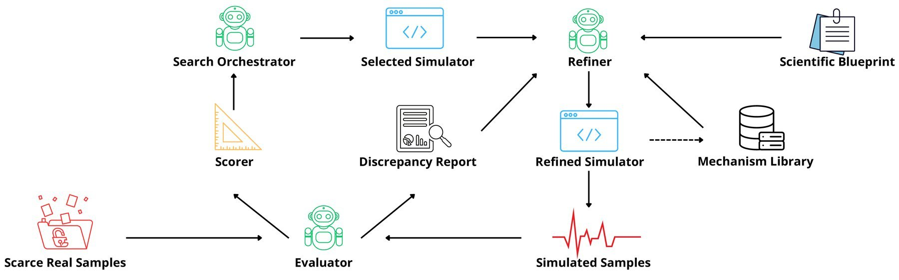

New recordings
All six tasks
The search evaluator on held-out recordings: patient-disjoint for VSD and AS, external datasets for the other four. Median of three seeds.
A scientific simulator is a program that encodes how mechanisms generate an observable signal. With no exact test of correctness, it has to be revised against a few real recordings. SimAuthor keeps every simulator it writes, chooses what to revise by score and how to revise from a discrepancy report, and reuses edits that worked.
On six biomedical tasks it beats score-only search on all six and reaches the best final score on five. Most of the gain is structural: 111 of 138 audited revisions change program structure, accounting for 86.1% of the signed improvement.


Drag the slider to replay a 100-attempt run program by program. Select any program in the tree to see its code change, the feedback it received and the context the refiner was given; the diagram highlights the part of the harness behind each tab.
Shown for each task: the seed whose best program appears latest (VSD and COPD seed 1, AS seed 2, AF seed 1, LQT and WPW seed 3).
Best-so-far search score over 100 authoring attempts, recomputed from the released runs. Lines show the median-seed run and shading spans three seeds; Sampling is a single pool in fixed proposal order. PUCT score search uses the same selection rule as SimAuthor but gives the refiner only the score, so the gap reflects what the refiner is shown rather than how candidates are chosen. SimAuthor uses about 3.8× the tokens of best-of-100 sampling; a token-matched best-of-380 still falls short on all six tasks.
Each test changes one thing relative to search: the recordings, the evaluator, or what the simulator is used for. Every test covers all tasks to which it applies.
All six tasks
The search evaluator on held-out recordings: patient-disjoint for VSD and AS, external datasets for the other four. Median of three seeds.
Audio and PPG tasks · ECG search already uses ECGFounder
The program chosen by the search score, re-scored with encoders never used during search: OPERA-CE for audio, PaPaGei for PPG.
ECG tasks · labelled PTB-XL and Chapman cohorts
AUPRC of a linear probe on frozen ECGFounder features after adding 300 synthetic positives. ID: PTB-XL; OOD: Chapman–Shaoxing. Probe and search share ECGFounder.
@article{wang2026simauthor,
title = {{SimAuthor}: Harnessing Foundation Models for Persistent Scientific Simulator Authoring},
author = {Wang, Yishan and Piao, Ran and Funk, Mathias and Saeed, Aaqib},
journal = {arXiv preprint arXiv:XXXX.XXXXX},
year = {2026}
}
Search scores measure agreement between simulated and real signal distributions. They do not establish physiological or mechanistic fidelity, and the model can only correct discrepancies the evaluator exposes. All data are public, de-identified research datasets used under their original licences; no recordings are redistributed. We make no diagnostic or clinical claims.